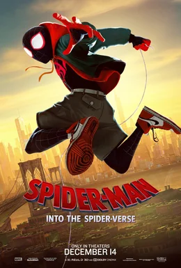
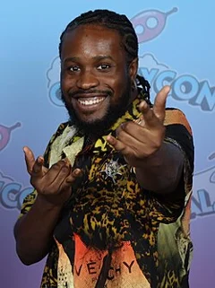

Spider-Man: Into the Spider-Verse (2018)
| Movie | Release Date | Poster |
|---|---|---|
| Spider-Man: Into the Spider-Verse PG · 1h 56m · action · adventure · science fiction |  |
| Trailer |
|---|
| Rotten Tomatoes | Metacritic | IMDb |
|---|---|---|
| 97% | 87/100 | View on IMDb |
| Overview |
|---|
Spider-Man: Into the Spider-Verse is a 2018 American animated superhero film based on the Marvel Comics character Spider-Man. Directed by Bob Persichetti, Peter Ramsey and Rodney Rothman from a screenplay by Phil Lord and Rothman, it is the first animated film in the Spider-Man franchise. Shameik Moore stars as the voice of Miles Morales, with Jake Johnson, Hailee Steinfeld, Mahershala Ali, Brian Tyree Henry, Lily Tomlin, Luna Lauren Vélez, Zoë Kravitz, John Mulaney, Kimiko Glenn, Nicolas Cage, Kathryn Hahn, and Liev Schreiber in supporting voice roles. The film's story follows Miles as he becomes the new Spider-Man and teams up with other Spider-People from various parallel universes to save his universe from the Kingpin. It was produced by Columbia Pictures and Sony Pictures Animation in association with Marvel Entertainment. Full plot (spoilers)New York City teenager Miles Morales struggles to live up to the expectations of his father, police officer Jefferson Davis , who sees Spider-Man , the superhero persona of Peter Parker, as a menace. Miles's uncle Aaron takes him to an abandoned metro station to paint graffiti as a way to cheer him up. There, Miles is bitten by a radioactive spider and gains abilities similar to Spider-Man. Returning to the station, he discovers a collider built by Kingpin , who hopes to access parallel universes to abduct alternate versions of his late wife Vanessa and son Richard , whose deaths he condemns Peter for. Peter attempts to shut down the collider while fighting Kingpin's enforcers the Green Goblin and Prowler , but is badly wounded when Green Goblin shoves him into it. He gives Miles a USB flash drive designed to sabotage the collider, warning that the machine could destroy the city if reactivated. After watching in horror as Kingpin murders Peter, Miles flees. As the city mourns Peter's death, Miles tries to honor his legacy by succeeding him as Spider-Man but inadvertently damages the flash drive. At Peter's grave, he meets an alternate Peter from another dimension. The duo infiltrate Alchemax to steal data for a new flash drive. They are confronted by its proprietor, Olivia Octavius , who discovers that Peter will die from cellular decay if he remains in their dimension. She reveals herself as this universe's Doctor Octopus and attempts to attack, chasing Miles and Peter into the nearby forest. The duo are then saved by Gwen Stacy , a Spider-Woman from another dimension. Following her defeat, Octavius returns to the lab where a furious Kingpin is waiting for her, whom she reassures that getting rid of them will be no problem and he and his family will be reunited. They visit Spider-Man's aunt, May , who is sheltering more Spider-People from other dimensions who slipped into Miles' universe due to the collider's influence – Spider-Man Noir , Peni Parker and Spider-Ham – who are also deteriorating. Miles offers to help the others return home but they tell him he lacks experience. Distraught, Miles retreats to Aaron's apartment, where he discovers his uncle is Prowler. He returns to the Parker house, where the new drive is completed, being followed by Kingpin's team. In the ensuing brawl, he reveals his identity to Aaron. Unwilling to murder his own nephew, Aaron attempts to spare Miles, but is fatally shot by Kingpin in retaliation and dies in Miles' arms. Miles flees just as Jefferson arrives on the scene and mistakes the new Spider-Man as his brother's murderer before regrouping with the other Spider-People. Not wanting to let Miles get killed, Peter restrains Miles and chooses to sacrifice himself by staying behind and deactivating the collider. Jefferson arrives outside the door of Miles's dorm room as he apologizes for his mistakes and expresses his faith in Miles, inspiring him. Miles manages to control his powers, escapes his restraints and creates his own Spider-Man suit with the help of Aunt May. He joins his allies in defeating Kingpin's enforcers and uses the new drive to send them home. Kingpin fights and overpowers Miles, attracting Jefferson's attention. Realizing that Spider-Man is not the menace he saw him as, he encourages Miles, who throws Kingpin at the collider's kill switch , destroying it. The city is saved and Kingpin's team is arrested as Jefferson receives evidence of Kingpin's murders of Aaron and the first Spider-Man. Miles embraces the responsibilities of his new life. Later, Gwen finds a way to contact Miles from her home dimension. Elsewhere, Miguel O'Hara travels to Earth-67 and ends up arguing with its Spider-Man. |
| Actor | Character | Photo |
|---|---|---|
| Shameik Moore | Miles Morales / Spider-Man An intelligent and rebellious teenager of African-American and Puerto Rican descent, who is imbued with spider-like abilities after being bitten by a radioactive spider and eventually becomes the new Spider-Man. |  |
| Jake Johnson | Peter B. Parker / Spider-Man Miles' reluctant mentor, a disheveled, jaded and brown-haired 38-year-old counterpart of Spider-Man from another dimension. | |
| Hailee Steinfeld | Gwen Stacy / Spider-Gwen / Spider-Woman A dimensionally-displaced counterpart of Gwen Stacy with spider-like abilities, who takes up the alias of "Gwanda" while at Miles' school. |  |
| Mahershala Ali | Aaron Davis / The Prowler Miles' uncle, who moonlights as a masked enforcer for Kingpin while keeping it a secret from his family. | |
| Brian Tyree Henry | Jefferson Davis Miles' African-American and police officer father, who disapproves of Spider-Man's vigilante actions. |  |
| Lily Tomlin | May Parker Peter's aunt, who is deceased in Peter B. | |
| Luna Lauren Vélez | Rio Morales Miles's Puerto Rican and nurse mother. | No photo |
| Zoë Kravitz | Mary Jane "MJ" Parker Peter Parker's wife in Miles's universe and Peter B. | |
| John Mulaney | Peter Porker / Spider-Ham A talking animal -based Spider-Man from a cartoon -based anthropomorphic universe, who was once a spider, bitten by a radioactive pig . | |
| Kimiko Glenn | Peni Parker / SP//dr A young Japanese-American girl from an alternative and anime -based universe who copilots her late father's biomechanical suit with a radioactive spider that she shares a telepathic link with. | |
| Nicolas Cage | Peter Parker / Spider-Man Noir A Spider-Man from a monochromatic universe set in the 1930s . |  |
| Kathryn Hahn | Doctor Olivia Octavius / Doctor Octopus The head scientist and CEO of Alchemax and a scientific adviser to Kingpin. | |
| Liev Schreiber | Wilson Fisk / Kingpin A crime lord and the benefactor of Alchemax in Miles' dimension. | |
| Stan Lee | – | No photo |
| Chris Pine | Spider-Man | No photo |
| Lex Lang | – | No photo |
| Oscar Isaac | Spider-Man 2099 | No photo |
| Lauren Vélez | – | No photo |
| Lake Bell | – | No photo |
| Jorma Taccone | – | No photo |
| Krondon | – | No photo |
| Joaquín Cosío | – | No photo |
| Akio Ōtsuka | – | No photo |
| Hiroyuki Yoshino | – | No photo |
| Detail | Value |
|---|---|
| Directed by | Peter Ramsey, Rodney Rothman, Bob Persichetti |
| Written by | Phil Lord and Christopher Miller |
| Produced by | Avi Arad, Amy Pascal, Phil Lord and Christopher Miller |
| Music by | Daniel Pemberton |
| Cinematography | Not available |
| Edited by | Robert Fisher Jr. |
| Production companies | Columbia Pictures, Sony Pictures Animation, Marvel Entertainment |
| Distributed by | Sony Pictures Motion Picture Group, InterCom, Sony Pictures |
| Running time | 116 minutes |
| MPAA rating | PG |
| Budget | $90 million |
| Box office | $364 million |
Overview, plot, and cast descriptions are from Wikipedia (CC BY-SA 4.0). Credits, ratings, and box office are from Wikidata.